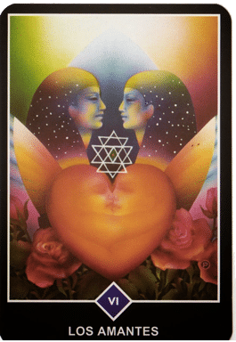

La meditación comienza por separarse de la mente, por ser un testigo. Ésta es la única manera mede separarse de algo. Si estás mirando hacia la luz, naturalmente, una cosa es segura: tú no eres la luz; eres quien está mirando la luz. Si estás observando las flores, una cosa es segura: tú no eres la flor; eres el observador.
La contemplación es la clave de la meditación. Contempla tu mente. No hagas nada: ni repetir un mantra, ni repetir el nombre de Dios. Sólo observa lo que la mente hace. No la perturbes, no la obstaculices, no la reprimas; no emprendas nada por tu parte. Limítate a ser un observador. Y el milagro de la contemplación es la meditación. A medida que observes, lenta, lentamente, la mente se vaciará de pensamientos. Pero no te estás quedando dormido; estás cada vez más alerta, más consciente.
Cuando la mente se vacía por completo, toda tu energía se transforma en una llama de despertar. Esta llama es el resultado de la meditación. Así que puedes decir que la meditación es otro nombre de la contemplación, del ser testigo, de la observación, sin emitir juicio ni evaluación alguna. Sólo por medio de la contemplación, saldrás de inmediato de la mente.
Osho.
| Cartas del Osho Zen Tarot | Significado |
|---|---|
| El loco: Representa al hombre libre que pasa página y emprende su andadura en busca de nuevas experiencias y ligero de equipaje. Es alguien que confía en sí mismo y en sus creencias, y que confía en los demás. Se guía por su intuición y en sus impulsos. Está abierto a cualquier experiencia, que pueda ser interesante sin pensar, que algo vaya a salir mal. Es siempre positivo, no tiene maldad y cree que lo buena está por venir. | |
| La voz interior: Nos habla con el silencio de su corazón. Sólo dice la verdad. Siempre observa y está alerta. En ella existe la dualidad: la luz y la oscuridad. Bucea en las emociones y analiza. El mensaje es que la verdad reside en nosotros mismos. Sea cual sea la respuesta, es nuestra verdad. Encontraremos nuestra verdad haciendo Meditación. | |
| La creatividad: Esta carta es la creatividad pura según nosotros mismos. Nos dice que es capaz de crear cualquier cosa, bajo nuestro criterio. No nos hace falta estudiar, porque nosotros creamos escuela creativa. Lo que surge de nuestro interior es creación y la creatividad surge de la unión de lo divino con lo místico y los desconocido. | |
| El rebelde: Representa a un hombre poderoso y autoritario, al maestro de su propio destino. Llega una antorcha, que representa la Luz y el sol. Todo lo ha obtenido con su esfuerzo. Es rebelde porque pasa por encima de todo convencionalismo y de toda norma, para hacerse a sí mismo y conseguir lo que quiere. Puede ser rico o pobre, es se vale por sí mismo. Su animal espiritual es el águila, que hace de mensajero entre la tierra y el cielo. | |
| El vacio: Es la oscuridad y el silencio del más puro vacío. No vemos, no sentimos, no percibimos nada, porque todo está por hacer. Debemos observar el vacío y sacar nuestra propia idea, sensación y experiencia. Algo sagrado saldrá de esta experiencia, por lo que aunque os parezca que no hay nada, estad atentos porque algo divino está a punto de surgir. | |
|  | Los amantes: El amor no es más, que atracción sexual, que nos lleva a las relaciones sexuales. Es la sociedad quien ha creado las expectativas, los compromisos y represiones. El amor sexual no puede perdurar y debemos aceptarlo con sabiduría, si no no disfrutaremos de él. Debemos recibirlo con alegría y despedirlo con gratitud. Nuestra pareja funciona cuando damos libertad y el amor del otro nos conduce al amor universal. |